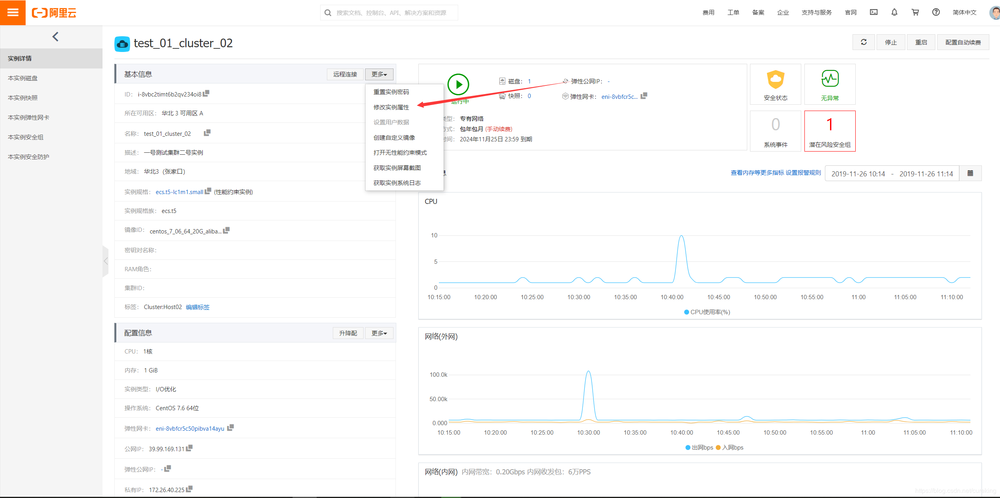
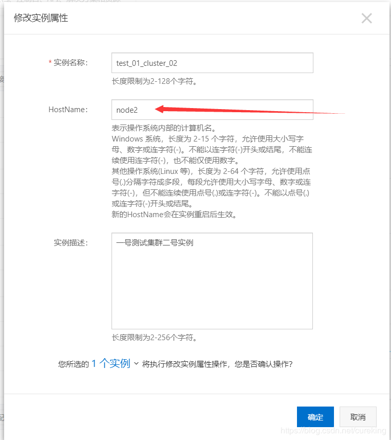
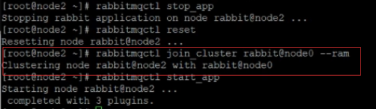
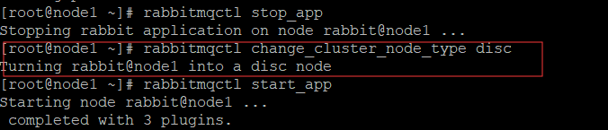
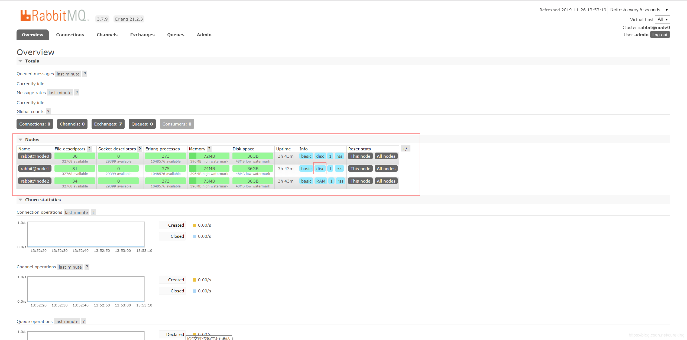
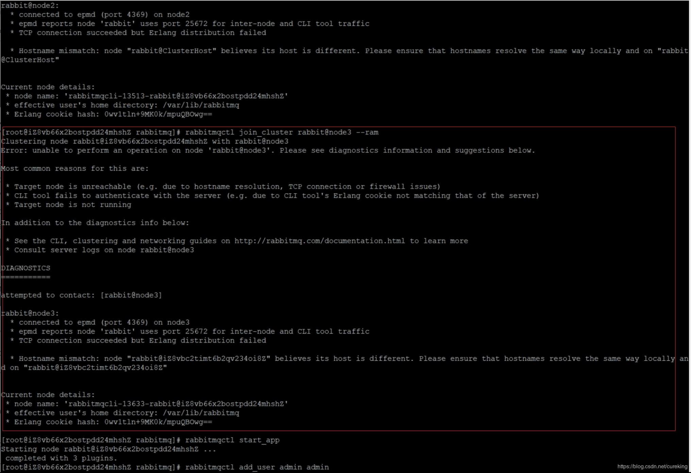
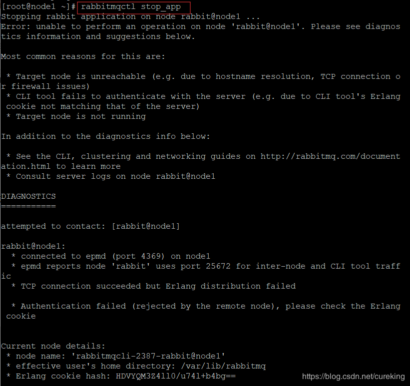
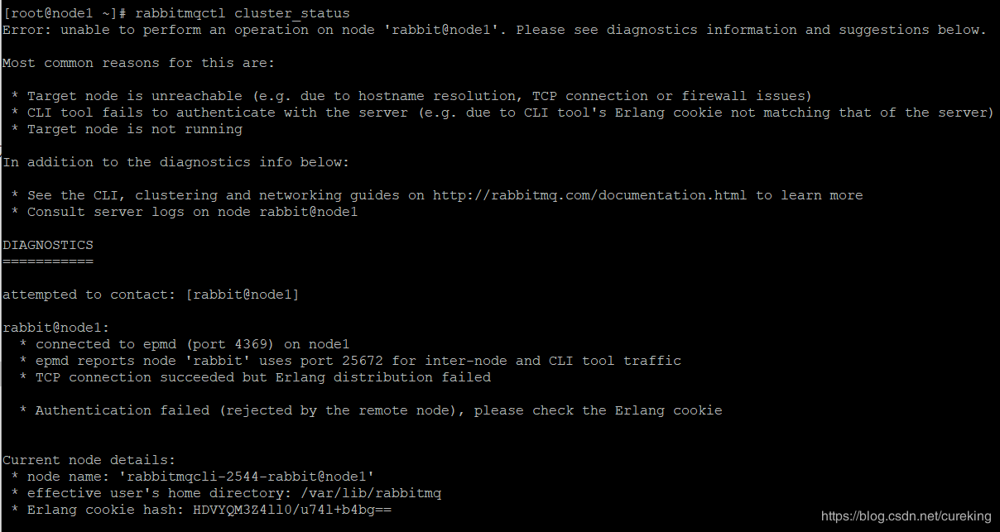

虽然我并不是部署人员，但是自己私人测试环境的各类东东还是得自己安装的。
尤其在规模不大的公司，基本安装部署工作都是后端的份内之事。
那么最令人痛苦的，莫过于自己就是安装大佬教程走，但是就是过不去。尤其是初学者，解决问题的能力，还不足，往往就直接卡死了。
其实还有另外一个问题，那就是很多的教程，包括许多视频的教学，大多采用不真实的环境。要么是多台虚拟机实现集群，要么是一台线上服务器走天下。当然作者们也有着诸多考虑，有的是为了学员可以零成本的感受安装，另一方面学员大多都是学习知识，而不是为了实际应用（真的懂得，又不大需要这个东东）。最重要的是，学习阶段，大部分安装都是单机的，可以满足需求了。
但是，我发现在很多的扣扣群，微信群依然存在着那么一批正式环境安装遇到各类问题，苦求无门的朋友。在我回复之后，部分人提议我可以将这部分经验发出来，帮助更多的人。
所以有了这个系列，我会通过真实的阿里服务器集群（三台），搭建各个中间件的集群等。
最后，由于打马赛克太麻烦了。并且我之后可能会开放安装视频，所以有的IP什么的，我并不方便打马赛克。但是希望你们不要做坏事儿哈。
RabbitMQ是一款消息中间件，其安装分为：
PS：以后有机会，会科普MQ的基本集群种类（如主从，集群，同步数据，转发数据，混合方案等）
RabbitMQ是基于erlang语言，所以在安装RabbitMQ前，需要安装erlang。
可以通过systemctl指令对RabbitMQ进行操作。
rabbitMQ服务器名：rabbitmq-server
所以可以有如下操作：
sudo systemctl start rabbitmq-serversudo systemctl stop rabbitmq-serversudo systemctl status rabbitmq-serversudo systemctl enable rabbitmq-serverRabbitMQ的一大特色，就是支持诸多插件，其中最广为人知的就是Web管理插件。
rabbitmq-plugins enable rabbitmq_managementRabbitMQ有一个默认的guest（密码也是guest）用户，但是只能通过localhost访问（即本地访问）。所以需要建立一个新的管理员用户，用于远程访问。
rabbitmqctl add_user admin admin rabbitmqctl set_user_tags admin administratorrabbitmqctl set_permissions -p / admin ".*" ".*" ".*"平台：阿里云
ECS实例规格：ecs.t5-lc1m1.small (性能约束实例)
CPU：单核
内存：1G
硬盘：40G
操作系统：CentOS7.6（已经测试CentOS7.3会出现问题）
购买ECS，用于平时测试，学习的话，四点建议：
如果还有什么需要的，可以询问我。必要的话，我会更新这里。
云服务器的防火墙，部分人将其分为两个。一个是云服务器的firewall，另一个是云平台的安全策略。
而阿里云的官方CentOS7.6镜像，是不开启firewall。可以通过systemctl status firewalld来进行确认。
而云平台的安全策略是需要在安全组内进行设置的。这个部分网上很多资料，就不在此赘述了。
而RabbitMQ需要开放4396，5672，15672，25672四个端口。
如果需要的话，可以@我或私信我。如果需求较大，我会回来，在此进行补充。
首先是下载。
在阿里云的Linux上可以通过以下方式，进行下载。
wget -P /home/download https://github.com/rabbitmq/erlang-rpm/releases/download/v21.2.3/erlang-21.2.3-1.el7.centos.x86_64.rpmwget -P /home/download https://github.com/rabbitmq/rabbitmq-server/releases/download/v3.7.9/rabbitmq-server-3.7.9-1.el7.noarch.rpm`但是，由于墙的缘故，阿里云的下载速度会非常感人（大约20kb/s）。
所以，建议有梯子的小伙伴，先下载到本地，再进行上传。
没有梯子的，那就没办法了。算了，我分享一下吧。
erlang（CentOS7）：提取码：aee8
RabbitMQ（CentOS7）：提取码：84lg
sudo rpm -Uvh /home/download/erlang-21.2.3-1.el7.centos.x86_64.rpmsudo yum install -y socatsudo rpm -Uvh /home/download/rabbitmq-server-3.7.9-1.el7.noarch.rpm没有校验的安装是不合理的。
此时，我们可以通过系统服务的方式，启动RabbitMQ服务。
见到如下页面就表示安装OK了。
简单说一下内存节点和磁盘节点。RabbitMQ中硬盘节点负责数据落地，负责将元数据落地到硬盘等工作。而内存节点不会进行元数据到硬盘的落地。所以如果一个集群只有内存节点，那么一旦断电，就彻底GG。另外，建议实际生产，配备多个磁盘节点，避免单点故障。
首先，在安装RabbitMQ之前，需要对阿里云服务器的HostName进行变更。
具体看下图：


我的服务器集群，是node0,node1,node2。有需要的可以改一下。
详细的原因，以及替代方案，会在后面提及。
通过以下命令
sudo vim /etc/hosts修改hosts文件：
::1 localhost localhost.localdomain localhost6 localhost6.localdomain6
127.0.0.1 localhost localhost.localdomain localhost4 localhost4.localdomain4
172.26.40.223 node0 node0
172.26.40.224 node1 node1
172.26.40.225 node2 node2前两行，一般为系统默认生成，可以不进行修改。
而后三行，就是我们需要进行修改和添加的。
后三行，首先IP地址，一般采用内网（因为内网速度快）。如果由于某些原因，无法使用内网IP，那就只能外网IP了。后两者其实就是RabbitMQ的节点名，此处等同于服务器的HostName，原因后面再说。
然后，通过SCP，将上述文件同步到所有集群服务器。
sudo scp /etc/hosts root@node1:/etc/
sudo scp /etc/hosts root@node2:/etc/PS：期间，会需要你输入另外两台服务器的对应密码（否则，岂不是谁都可以向你服务器传文件）。
由于RabbitMQ的集群是基于其实现语言erlang自身的分布式实现。所以我们需要通过同步erlang的cookie文件，来帮助RabbitMQ实现集群。就类似于，大家都有相同的erlang.cookie，表示大家是自己人，可以相互通信。
在node0服务器上，执行以下语句：
scp /var/lib/rabbitmq/.erlang.cookie root@node1:/var/lib/rabbitmq/
scp /var/lib/rabbitmq/.erlang.cookie root@node2:/var/lib/rabbitmq/之前已经介绍了。不再赘述。
通过以下命令，启动所有节点的RabbitMQ实例。
sudo systemctl start rabbitmq-serverrabbitmqctl stop_apprabbitmqctl resetrabbitmqctl join_cluster rabbit@node0 --ramPS：集群添加节点成功，应该可以看到如下效果：

rabbitmqctl start_apprabbitmqctl cluster_statusPS：当然，也可以直接从Web管理界面，更直观地看到。
PS：其实，单机模式下，各个节点就是集群。不过是由单个磁盘节点组成的单节点集群。
**重复该过程，将其它节点也添入到node0的集群中。
最终可以在Web管理界面，看到如下效果图，表示RabbitMQ多机多节点集群构建成功。
PS：图中Info中有标明，当前node0为disc节点，而node1与node2为RAM节点。
按照上述的方式，构建出来的集群，是一个磁盘节点+多个内存节点。为了提高可用性。往往需要复数个磁盘节点。所以，这里简单介绍一下切换节点类型的方式。
rabbitmqctl stop_apprabbitmqctl change_cluster_node_type discPS：集群节点类型切换成功，应该可以看到如下效果：

rabbitmqctl start_appPS：集群节点类型修改成功，应该可以看到如下Web管理界面：

也就是执行以下语句时，出现异常：
rabbitmqctl join_cluster rabbit@node1 --ram异常截图：

其实，根本原因就是由于RabbitMQ的节点名称造成的。
其中异常信息，已经明确地说了：Hostname mismatch:XXXXXX
就是由于阿里云的默认HostName是随机生成的，而RabbitMQ的节点名，默认采用了服务器的HostName。
解决方案有两个：
NODENAME=node1也就是执行以下语句时，出现异常：
rabbitmqctl stop_app或
rabbitmqctl cluster_status异常截图：

或

其实这是由于erlang.cookie是在RabbitMQ启动后替换，而导致的冲突。
解决办法：
通过以下命令重启服务即可
systemctl restart rabbitmq-server由于这个不涉及多个真实服务器，所以比较简单。我就不再赘述。
简单引用一下WizMime大佬的过程。
准备一台已经安装好RabbitMQ的机器
NODENAME=rabbit1sudo systemctl stop rabbitmq-serverrabbitmq-server -detachedRABBITMQ_NODE_PORT=5673 RABBITMQ_SERVER_START_ARGS="-rabbitmq_management listener [{port,15673}]" RABBITMQ_NODENAME=rabbit2 rabbitmq-server -detachedRABBITMQ_NODE_PORT=5674 RABBITMQ_SERVER_START_ARGS="-rabbitmq_management listener [{port,15674}]" RABBITMQ_NODENAME=rabbit3 rabbitmq-server -detachedrabbitmqctl -n rabbit2 stop_appPS：-n表示针对特定节点进行操作
rabbitmqctl -n rabbit2 resetrabbitmqctl -n rabbit2 join_cluster rabbit1 --ramrabbitmqctl -n rabbit2 start_app通过
rabbitmqctl cluster_status查看集群状态，看到{running_nodes,[rabbit3@node1,rabbit2@node1,rabbit1@node1]}说明节点已启动成功。
PS：同样也可以从Web管理界面查看。
注意防火墙相关配置，尤其这次增加了许多端口。
sudo firewall-cmd --zone=public --add-port=4369/tcp --permanent
sudo firewall-cmd --zone=public --add-port=5672/tcp --permanent
sudo firewall-cmd --zone=public --add-port=25672/tcp --permanent
sudo firewall-cmd --zone=public --add-port=15672/tcp --permanent
sudo firewall-cmd --zone=public --add-port=5673/tcp --permanent
sudo firewall-cmd --zone=public --add-port=25673/tcp --permanent
sudo firewall-cmd --zone=public --add-port=15673/tcp --permanent
sudo firewall-cmd --zone=public --add-port=5674/tcp --permanent
sudo firewall-cmd --zone=public --add-port=25674/tcp --permanent
sudo firewall-cmd --zone=public --add-port=15674/tcp --permanent其实就是依赖之前实现的多主集群转发数据模式，再通过Web管理页面的一些设置即可实现。
所以不存在部署方面的问题。